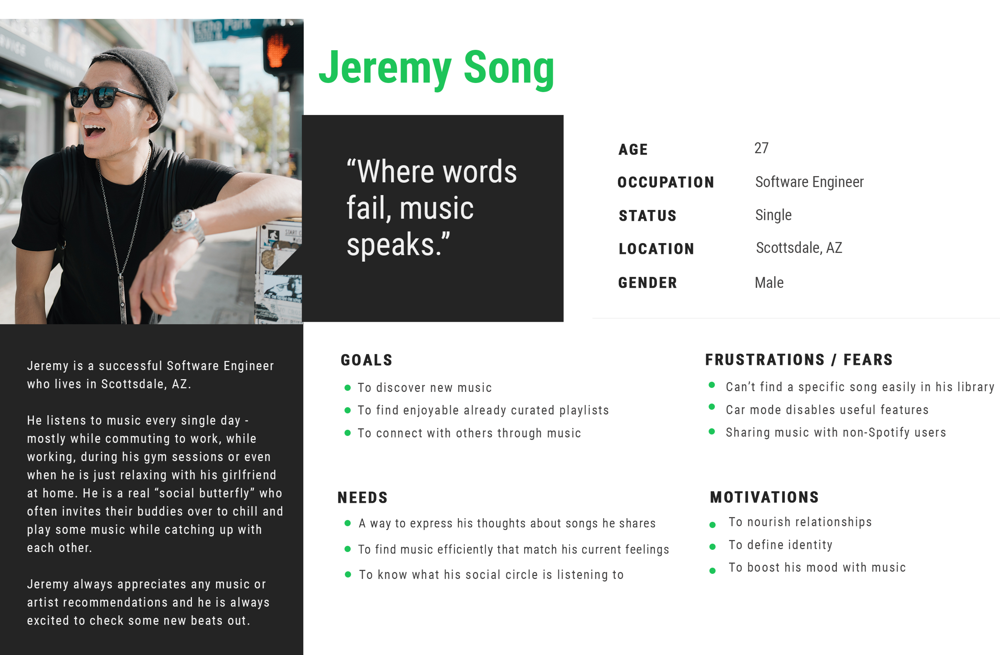

Spotify
Adding social features
My Role: UX/UI Designer: UX Research, Information Architecture, Visual Design, Interaction Design, Usability Testing
Client: Spotify, industry leader music streaming service
Team: Self-directed (with expert mentor support and group crit feedbacks)
Prototype: View prototype in Invison
Time: 80 hours over 3 weeks, July, 2019

01.Research
Goal: To research the industry, Spotify and users
Process: Market Research, Competitive Analysis, Heuristic Evaluation, User Interviews
Competitive Analysis
Spotify is the leader in the music streaming industry so I decided to analyze how Spotify might distinguish itself from its competitiors. Through my analysis, I was pointing out the strengths and weaknesses of the competitor music streaming services, which were Apple Music, Pandora, Soundcloud and Amazon Music. I compared them to Spotify based on some certain additional factors: monthly unique users in the US, subscription price, music library size, platforms, strengths and weaknesses.

Heuristic Evaluation
Then I conducted a heuristic evaluation to learn about the current app's information architecture, hierarchy, content, features to be able to consider how I could integrate a new feature within the existing design. I analyzed the latest version of the mobile app's premium version by taking screenshots of main screens and explaining the purpose of each screens with annotations to important features. I was able to identify the design patterns of Spotify that allowed me to integrate the new features seamlessly.

02.Define
Goal: Synthesize research to define the target audience - and their needs, frustrations, goals
Process: Empathy Map, Persona, POV Statements & HMW Questions
User Persona
By taking the findings from the empathy map I could start building the user persona who I named Jeremy Song who he reflects the ideal customer of Spotify. I chose the persona to be a Male as my secondary research findings indicated that more males use Spotify than females. Jeremy represents the key target audience - the Millennials - and by keeping his goals and needs in mind throughout the entire design process helped me design user-focused features.
POV Statements & HMW Questions
With the target audience defined, using the needs and insights, I crafted "Point of View" (POV) statements to define the core problems of users. Based on the POV statements, I could create the How Might We questions that helped me to start generating innovative ideas in the right direction to make the user experience more enjoyable and social for Jeremy.